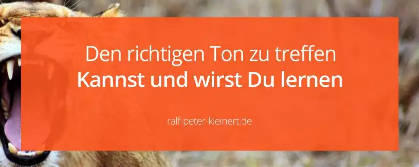

Die Sprache, ist dein wichtigstes Werkzeug
Um ansprechend und aktiv Kommunizieren zu können, musst du deine Sprache beherrschen. Sprache für den Social Media Manager, kann als sein Werkzeugkasten gesehen werden. Die Sprache ist dein Werkzeug! Da kommt es auch nicht immer darauf an, was du zu sagen hast. Der Ton spielt ganz oft die Musik. Es ist viel wichtiger, wie du etwas sagst. Schlagfertigkeit und einfühlsame Sprache, außerdem direkte Sprache und gezielte Fragen sowie gute Antworten. Ernst und Witz solltest du auseinanderhalten und anwenden können. Das richtige Maß und den richtigen Ton zu treffen, wird nicht immer leicht für dich sein.
Tipp und Rechtschreibfehler macht jeder, davor ist niemand sicher. Ohne deine Sprache gut zu beherrschen, kommst du in dem Beruf nicht weit.
Gutes Schreiben muss gelernt werden
Die Fähigkeit, gut zu schreiben, wird einem auch nicht einfach in die Wiege gelegt. Sprache ist etwas, was man lernen muss. Am besten lernt man hier durch Kontakt mit Menschen. Ja, durch Reden lernt man nicht das Schreiben an sich, aber sehr wohl die Ausdrucksweise. Lerne Sprache so wie du es am besten kannst, aber lerne sie, denn die Sprache, ist dein wichtigstes Werkzeug in der Social Media Kommunikation! Du interessierst dich für den Beruf des Social Media Managers. Deshalb hast du wahrscheinlich die Schule hinter dir. Oder du stehst kurz davor sie zu beenden.
Da hast du natürlich die Basics des Schreibens drauf. Es ist nun aber wirklich wichtig, dass du am Ball bleibst. Lesen ist einer der Schlüssel. Ich habe ein Buch gefunden, welches verschiedene Sprachstile vereint: Die Experten Formel. Das Buch bringt dich auch als Social Media Manager weiter. Am besten liest du quer durch das Gemüsebeet. Comics, Tageszeitungen und Magazine. Hier bieten sich zum Beispiel „Das Lustige Taschenbuch“, der „Berliner Kurier“ oder „Focus“ und „Spiegel“ an.
Wenn du diese Werke vergleichst, wirst du feststellen, dass die Sprachstile weit auseinander gehen. Der Spiegel als Druckausgabe ist perfekt um gute und komplexe Sprache kennenzulernen. Die hohe Sprache zu verstehen, erfordert bei Spiegel oder Focus Erfahrung. Kommst du direkt aus der Schule und liest den Focus, wird es ungewohnt.
Sprache ist oft kompliziert
Rechtschreibung und Grammatik sowie die Wortauswahl sind in deutscher Sprache komplex. In Deutschland haben wir für vieles mehrere und verschiedene Wörter. Dieses Vorgehen ist in deutscher Sprache überall einsetzbar und weltweit einzigartig. Wenn du mit deutschem Hip-Hop vertraut bist, verstehst du sicher was ich meine. Dazu kommt noch der Sarkasmus und die Art, wie man etwas betont. Jeder Mensch hat somit seine eigene Sprache. Hast du also viel Kontakt mit verschiedenen Menschen lernst du Sprache. In den Social Media Berufen brauchst du Sprache aber auch um Konzepte zu schreiben und um Pläne und Analysen zu verfassen. Hier kannst du mal in die Aufgaben Social Media Management reinlesen. Ohne gute Sprachkenntnis geht es einfach nicht.
Sprache und Rechtschreibung
Ein großes Problem ist besonders bei langen Texten, die Fehlerblindheit. Du siehst ganz oft deine eigenen Fehler nicht. Das hat verschiedene Gründe. Du und deine Augen werden bei langem Schreiben müde. Deshalb musst du dir genügend und regelmäßig Pausen gönnen. Interessanter ist aber unser Gehirn. Dieses hat die Fähigkeit zur Abstraktion. Die meisten werden diesen Beispielsatz lesen können: „D4s h43e ich nihct ged4ch1. D4s g3ht w1rkl1ch! B0a ist d4s ksras!„
Das Gehirn liest von allein
Das Gehirn ist in der Lage Lücken zu füllen „F ßb ll-Spieler“ oder virtuelle Interpunktion wie zum Beispiel ein Komma zu sehen, wo gar keins ist. Wenn du den Text auch noch selbst geschrieben hast, weiß dein Gehirn auch genau was da steht, Beziehungsweise stehen sollte. Unsere Gehirne machen Fehler oft einfach unsichtbar. Die Eigenkorrektur ist nur bedingt erfolgreich. Sicher, du findest immer mal wieder einen Fehler. Aber oft nicht alle. Das Gute ist, dass alle Menschen dieses „Problem“ haben. Eine Herangehensweise kann sein, seinen Text ein paar Tage wegzulegen. Diese Zeit ist aber meistens nicht da.
Lasse deinen Text am besten von einem Kollegen oder Bekannten Korrekturlesen. Hier eine Übersicht zu den verschiedenen Themen aus dem Bereich Social Media Management.